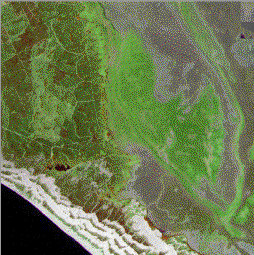
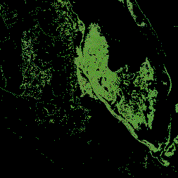

|
| [Up] |
struct RGBPixel { char red, green, blue; };
typedef marray <RGBPixel,[*:*,*:*]> RGBImage;
typedef set<RGBImage> RGBSet;
The first line defines the actual base type as a struct containing
3 byte-sized components; these components can be addressed by their symbolic
names or their number. The second line defines an RGBImage as
a 2-dimensional object of any size over the base type RGBPixel.
The last line defines a set (=collection) of RGB images.
The components of an MDD object over a composite base type can be addressed individually. You can request projections on one component (e.g. get the blue band only of an RGB image) or request operations on specific components (e.g. increment the green component of each cell by a certain value).
An example: to the left you can see an aerial shot in RGB format. If you're interested in the areas covered in vegetation you could request the server to blacken out all the pixels that don't qualify as "green" (meaning a green component large in proportion to the red and blue components, otherwise you'll get a lot of grey). You can see the result of the following query to the right. Click on either image to get the full-sized original.
SELECT img * ((img.green > 130c) AND (img.red < 110c) AND (img.blue < 140c)) FROM cnig AS img
 |
 |
| [Up] |
03-Mar-1998